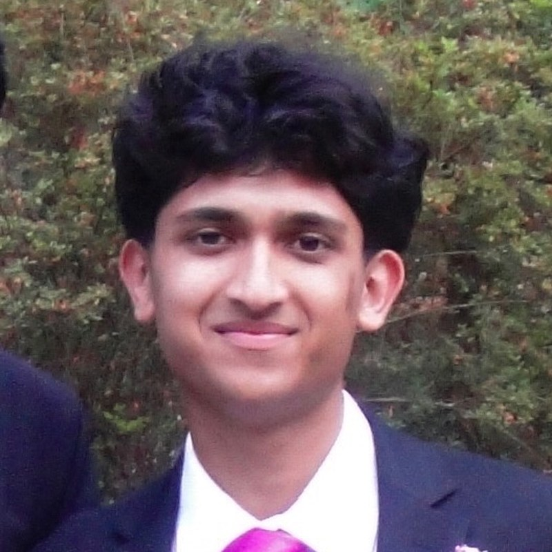

Arjun Pendharkar
Co-creator · Tool and data
Senior, Green Level High School
Arjun is a senior at Green Level High School in Cary, North Carolina, who also takes college courses through Wake Technical Community College. He is interested in biomedical engineering and in using technology to improve the environment. He maintains the tool's code and data repository.
- Biomedical engineering
- Environmental technology